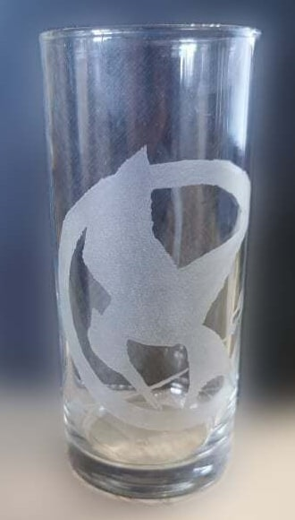
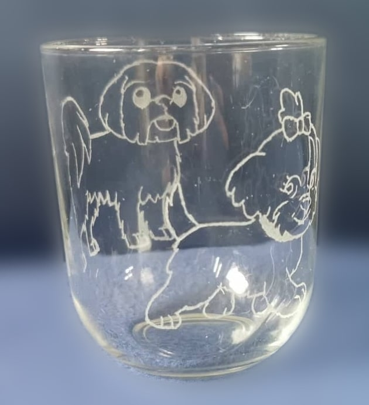

Wat is het?
Glasgravering is mijn nieuwe hobby. Dit houdt in dat ik drinkglazen beginnen graveren ben met teksten en prenten die ikzelf gekozen heb. Ik maak hier eerst een afdruk van en bevestig deze in het glas en graveer dan met de hand over de lijnen van de afdruk. Als ik helemaal rond ben gaat het glas even in een kom met heet water om de overtollige glasstukjes er af te halen. Hierna ga ik een tweede maal over alles dat ik gegraveerd heb maar op een hogere snelheid om nog iets dieper in het glas te gaan en het egaal te maken. Daarna word het glas afgewassen om helemaal vrij te maken van plekken en stukjes glas. Dan controleer ik het gegraveerde nogmaals en werk bij indien nodig voor een perfecte afwerking.
Tijdsduur?
Je mag toch wel rekenen dat ik voor 1 glas te doen, van begin tot einde, toch wel kleine 2 uur bezig ben afhankelijk van het formaat van het te graveren deel uiteraard.
Kostprijs
De kostprijs hangt af van de prijs van het glas. Dat is het enige dat betaald moet worden, daar het mijn hobby is.
Mogelijkheden
Het is mogelijk om enkele woorden of een tekening op het glas te laten graveren. Een foto is echter niet mogelijk en kleur is ook niet mogelijk.
Qua glazen is alles mogelijk zolang ik aan het soort glas geraak. Als u een eigen glas heeft dat u wens te laten doen is het best om even contact op te nemen om te zien wat er mogelijk is. Kristal is lastiger te graveren wegens de snelle breekbaarheid van het soort materiaal.
Klein limonadeglas
Mortal Kombat logo

Limonadeglas
Super Mario Bros

Limonadeglas
Mario Bros 3

Klein limonadeglas
Club Brugge


Asbak
Club Brugge

Limonadeglas
The Hunger Games

Klein limonadeglas
Hondjes
